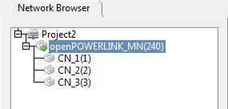
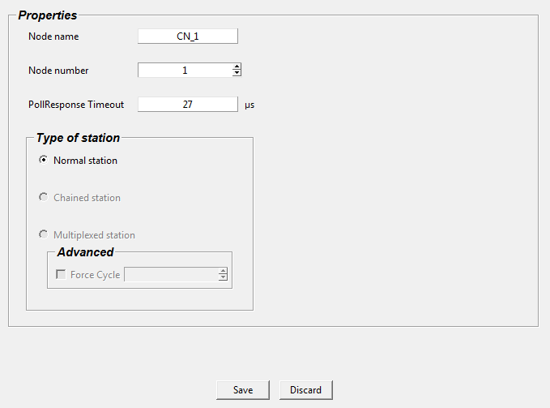
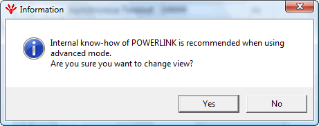

Simple view/ Advanced view
The user can select either simple view or advanced view. In simple view only important properties of the MN and CN are shown, where as in advanced view the user can view all the objects.
NOTE: By default the project starts with simple view.
Simple view

In simple view the user will have only the important properties listed. The user will not have access to any objects. The below figure shows the simple view.

Advanced view
In advanced view the users will have access to all the objects in MN and CN.
Switching to advanced view from simple view
Users can switch to advanced view from the View menu.

A popup will appear when the user changes the view. Clicking 'Yes' will switch to advanced view.